Дискрет тасодифий микдорлар. Таксимот конуни
Олдинги мавзуларда у ёки бу соннинг чикишидан иборат бўлган ходисалар бир неча марта келтирилди. Масалан, шашколтош ташланганда 1, 2, 3, 4, 5 ва 6 сонлари чикиши мумкин эди. Чиккан очколар сонини олдиндан аниклаб бўлмайди, чунки у тўлалигича хисобга олишнинг имкони бўлмаган кўпгина тасодифий сабабларга боглик. Шу маънода очколар сони тасодифий катталикдир; 1, 2, 3, 4, 5 ва 6 сонлари шу катталикнинг мумкин бўлган кийматларидир.
Тасодифий микдор деб дастлаб маълум бўлмаган, олдиндан хисобга олиниши мумкин бўлмаган тасодифий сабабларга боглик бўлган битта ва факат битта мумкин бўлган кийматни тажриба натижасида кабул киладиган катталикка айтилади.
1-мисол. Юзта чакалок ичида ўгил болалар сони 0, 1, 2, ... , 100 кийматларни кабул килиши мумкин бўлган тасодифий микдордир.
2-мисол. Замбаракдан отилган снаряднинг учиб ўтган масофаси
тасодифий микдордир. Бу микдорнинг мумкин бўлган кийматлари бирор 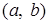
Тажрибалар натижасида элементар ходисалар рўй бергани учун тасодифий микдор ва элементар ходиса тушунчаларини боглаб, тасодифий микдорнинг бошка таърифини бериш мумкин.
Тасодифий микдор деб 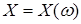 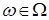 элементар
ходисалар фазосида аникланган
элементар
ходисалар фазосида аникланган
3-мисол. Иккита танга ташланганда чиккан герблар сони Х 0, 1 ва 2 кийматларни кабул килиши мумкин бўлган тасодифий микдордир. Элементар ходисалар фазоси куйидаги элементар ходисалардан иборат:
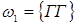 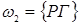 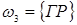 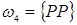
У холда Х куйидаги кийматларни кабул килади:
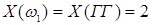 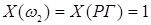
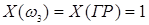 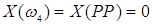
Тасодифий микдорлар 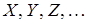 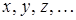 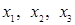
Дискрет (узлукли) тасодифий микдор деб айрим, ажралган мумкин бўлган кийматларни маълум эхтимолликлар билан кабул килувчи тасодифий микдорга айтилади. Дискрет тасодифий микдорнинг мумкин бўлган кийматларининг сони чекли ёки чексиз бўлиши мумкин. Бунга мисол сифатида 1-мисолдаги тасодифий микдорни олиш мумкин.
Узлуксиз тасодифий микдор деб бирор чекли ёки чексиз ораликдаги барча кийматларни кабул килиши мумкин бўлган тасодифий микдорга айтилади. Узлуксиз тасодифий микдорнинг мумкин бўлган кийматларининг сони чексиздир. Бундай тасодифий микдорга мисол сифатида 2-мисолдаги тасодифий микдорни олиш мумкин.
Дискрет тасодифий микдорнинг берилиши учун унинг мумкин бўлган кийматларини санаб чикиш етарли эмас, яна уларнинг эхтимолликларини хам кўрсатиш лозим. Иккинчи томондан, кўп масалаларда тасодифий микдорларни элементар ходисаларнинг функциялари сифатида карашнинг зарурати йўк, факат тасодифий микдорнинг мумкин бўлган кийматларининг эхтимолликларини, яъни тасодифий микдорнинг таксимот конунини билиш етарли.
Дискрет тасодифий микдор эхтимолликларининг таксимот конуни ёки соддагина таксимот конуни деб мумкин бўлган кийматлар билан уларнинг эхтимолликлари орасидаги мосликка айтилади; уни жадвал, график ва формула кўринишда бериш мумкин.
Эхтимолликлар таксимот конунининг турли усулларда берилишини мисолларда кўриб чикайлик.
Дискрет тасодифий микдор таксимот конунининг жадвал оркали берилишида жадвалнинг биринчи сатри мумкин бўлган кийматлардан, иккинчи сатри эса уларнинг эхтимолликларидан тузилади. Жадвалнинг иккинчи сатридаги эхтимолликларнинг йигиндиси 1 га тенг бўлиши керак. 1-жадвалда 3-мисолдаги дискрет тасодифий микдорнинг таксимот конуни берилган.
1-жадвал
|
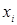 |
0 |
1 |
2 |
|
|
1 / 4 |
1 / 2 |
1 / 4 |
4-мисол. Пул лотереясида 100 та билет чикарилган. Битта 5000 сўмлик, бешта 1000 сўмлик ва ўнта 500 сўмлик ютук ўйналмокда. Битта лотерея билети эгасининг мумкин бўлган ютугидан иборат бўлган Х тасодифий микдорнинг таксимот конуни топилсин.
Ечиш.
Х нинг мумкин бўлган кийматларини ёзамиз: 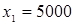 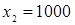 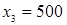 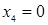 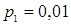 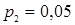 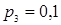 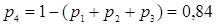
У холда изланаётган таксимот конуни куйидаги кўринишда
2-жадвал
|
|
0 |
500 |
1000 |
5000 |
|
|
0,84 |
0,1 |
0,05 |
0,01 |
Якколлик учун дискрет тасодифий микдорнинг таксимот конунини
график кўринишда хам тасвирлаш мумкин, бунинг учун тўгри бурчакли координаталар
системасида 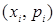
Энди формулалар оркали берилган айрим дискрет таксимотлар — биномиал, геометрик ва Пуассон таксимотларини кўриб чикайлик.
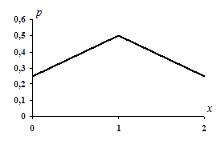
1-расм.
n та богликмас тажриба ўтказилаётган бўлиб, уларнинг хар бирида А ходиса рўй бериши (муваффакият)нинг эхтимоллиги доимий ва p га тенг бўлсин (демак, рўй бермаслик (муваффакиятсизлик)нинг эхтимоллиги q=1–p га тенг). Х дискрет тасодифий микдор сифатида А ходисанинг шу тажрибаларда рўй беришларининг сонини кўриб чикайлик. Х нинг мумкин бўлган кийматлари бундай: 0, 1, 2, ..., n. Бу мумкин бўлган кийматларнинг эхтимолликлари (4.1) Бернулли формуласи бўйича топилади:
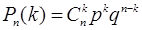
бу ерда k= 0, 1, 2, ..., n.
Эхтимолликларнинг биномиал таксимоти деб Бернулли формуласи билан аникланадиган эхтимолликлар таксимотига айтилади. Бернулли формуласининг ўнг томонини Ньютон биноми ёйилмасининг умумий хади сифатида караш мумкин бўлгани учун бу таксимот конуни «биномиал» деб аталади:
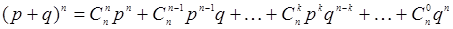
p + q = 1 бўлгани учун тасодифий микдорнинг мумкин бўлган кийматлари эхтимолликларининг йигиндиси 1 га тенг.
Шундай килиб, биномиал таксимот конуни куйидаги кўринишга эга
3-жадвал
|
|
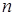 |
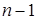 |
. . . |
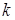 |
. . . |
0 |
|
|
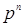 |
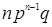 |
. . . |
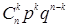 |
. . . |
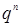 |
Биномиал таксимотга мисол сифатида 3-мисолдаги тасодифий микдорнинг таксимотини келтириш мумкин.
Фараз килайлик, богликмас тажрибалар ўтказилиб, уларнинг хар
бирида А ходисанинг рўй бериши (муваффакият)нинг эхтимоллиги р га
( 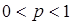
Агар Х оркали биринчи муваффакиятгача бўлган тажрибалар сонига тенг бўлган дискрет тасодифий микдорни белгиласак, у холда унинг мумкин бўлган кийматлари 1, 2, 3, ... натурал сонлардан иборат бўлади.
Фараз килайлик, биринчи k – 1 та тажрибада А ходиса рўй бермасдан, k-тажрибада рўй берди. Бу «мураккаб ходисанинг» эхтимоллиги, богликмас ходисаларнинг эхтимолликларини кўпайтириш хакидаги 3-теоремага асосан
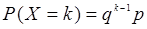
га тенг.
Эхтимолликларнинг геометрик таксимоти деб (5.1) формула билан аникланадиган эхтимолликлар
таксимотига айтилади, чунки бу формулада k = 1, 2, ... деб фараз килсак,
биринчи хади р га ва махражи q га ( 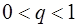
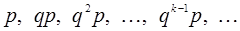
Чексиз камаювчи геометрик прогрессиянинг йигиндисини топсак, тасодифий микдорнинг мумкин бўлган кийматлари эхтимолликларининг йигиндиси 1 га тенг эканлигини осон кўриш мумкин:
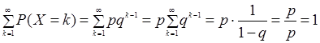
Шундай килиб, геометрик таксимот конуни куйидаги кўринишга эга:
4-жадвал
|
|
1 |
2 |
3 |
. . . |
K |
. . . |
|
|
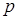 |
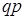 |
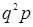 |
. . . |
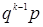 |
. . . |
5-мисол.
Замбаракдан нишонга биринчи марта теккунча ўк узилмокда. Нишонга тегишнинг эхтимоллиги
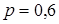
Ечиш.
Шартга кўра ,
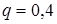 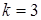 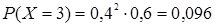
Хар бирида А ходисанинг рўй бериш эхтимоллиги р
га тенг бўлган n та богликмас тажриба ўтказилсин. Бу тажрибаларда ходисанинг
k марта рўй бериши эхтимоллигини топиш учун Бернулли формуласидан
фойдаланилади. Агар п катта бўлса, Лапласнинг локал теоремасидан
фойдаланилади. Бирок бу теорема ходисанинг эхтимоллиги кичик ( 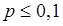
Агар 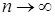 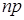
(5.2)
Бу формула оммавий (п жуда катта) ва кам рўй берадиган (р кичик) ходисалар эхтимолликларининг Пуассон таксимот конунини ифодалайди. Пуассон таксимоти учун махсус жадваллар мавжуд.
6-мисол. Завод базага 5000 та сифатли махсулот жўнатди. Махсулотнинг йўлда шикастланиш эхтимоллиги 0,0002 га тенг. Базага 3 та яроксиз махсулот келишининг эхтимоллиги топилсин.
Ечиш. Шартга кўра , , . ни топамиз:
.
Изланаётган эхтимоллик (5.2) формула бўйича куйидагига тенг:
.
Назорат учун саволлар:
1. Тасодифий микдор умумий холда ва функциялар тилида кандай таърифланади?
2. Дискрет тасодифий микдор нима?
3. Узлуксиз тасодифий микдор нима?
4. Дискрет тасодифий микдорнинг таксимот конуни хакида нимани биласиз?
5. Биномиал таксимот конуни хакида нимани биласиз?
6. Геометрик таксимот конунининг алохида хусусиятлари нималардан иборат?
7. Кайси холларда Пуассон таксимотидан фойдаланилади?